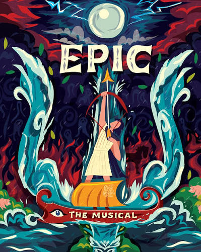

EPIC: The Musical je viralni, konceptualni mjuzikl iz devet delova koji je kompletno napisao i producirao Horhe Rivera-Herans (Jorge Rivera-Herrans). Sastoji se od 40 pesama podeljenih u 9 „saga” kroz dva čina, a predstavlja modernu muzičku adaptaciju Homerove Odiseje.
Mjuzikl kombinuje tradicionalni teatar sa uticajima iz animea, video-igara i različitih savremenih muzičkih žanrova. Stekao je ogromnu popularnost na TikToku i Jutjubu, gde je zajednica fanova kreirala hiljade animacija (animatika) za pesme pre nego što je zvanična vizuelna verzija uopšte najavljena.